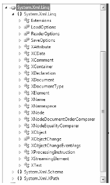
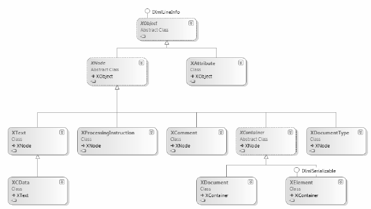

Somewhat surprisingly, the core LINQ to XML assembly (System.Xml.Linq.dll) defines a very small number of types in three distinct namespaces, specifically System.Xml.Linq, System.Xml.Schema, and System.Xml.XPath (see Figure 24-2).
Figure 24-2 The namespaces of System.Xml.Linq.dll
The core namespace, System.Xml.Linq, contains a very manageable set of classes that represent various aspects of an XML document (its elements and their attributes, XML namespaces, XML comments, and processing instructions, etc.). Table 24-1 documents the core members of System.Xml.Linq.
Table 24-1. Select Members of the System.Xml.Linq Namespace
| Member of System.Xml.Linq | Meaning in Life |
|---|---|
| XAttribute | Represents an XML attribute on a given XML element. |
| XCData | Represents a CDATA section in the XML document. Information in a CDATA section represents data in an XML document which must be included, but does not conform to the rules of XML grammars (for example, script code). |
| XComment | Represents an XML comment. |
| XDeclaration | Represents the opening declaration of an XML document. |
| XDocument | Represents the entirety of an XML document. |
| XElement | Represents a given element within an XML document, including the root element. |
| XName | Represents the name of an XML element or XML attribute. |
| XNamespace | Represents an XML namespace. |
| XNode | Represents the abstract concept of a node (element, comment, document type, processing instruction, or text node) in the XML tree. |
| XProcessingInstruction | Represents an XML processing instruction. |
| XStreamingElement | Represents elements in an XML tree that supports deferred streaming output. |
Figure 24-3 shows how the inheritance chain of the key class types.
Figure 24-3 The LINQ to XML core class hierarchy
In addition to the X* classes, System.Xml.Linq defines a class named Extensions, which (of course) defines a set of extension methods which typically extend IEnumerable<T>, where T is some descendent of XNode or XContainer. Table 24-2 documents some of the important extension methods to be aware of (as you will see, these are very useful when you wish to work with LINQ queries).
Table 24-2. Select Members of the LINQ to XML Extensions Class
| Member of Extensions | Meaning in Life |
|---|---|
| Ancestors<T>() | Returns a filtered collection of elements that contains the ancestors of every node in the source collection. |
| Attributes() | Returns a filtered collection of the attributes of every element in the source collection. |
| DescendantNodes<T>() | Returns a collection of the descendant nodes of every document and element in the source collection. |
| Descendants<T> | Returns a filtered collection of elements that contains the descendant elements of every element and document in the source collection. |
| Elements<T> | Returns a collection of the child elements of every element and document in the source collection. |
| Nodes<T> | Returns a collection of the child nodes of every document and element in the source collection. |
| Remove() | Removes every attribute in the source collection from its parent element. |
| Remove<T>() | Removes all occurrences of a given node from the source collection. |
As you can tell from their names, these methods allow query a loaded XML tree to find elements, attributes, and their values. Collectively, these methods are termed axis methods, or simply axes. You can apply these methods directly to parts of a tree of nodes, or use them to build more elaborate LINQ queries.
Note The abstract XContainer class support a number of methods which are identically named to the members of Extensions. XContainer is the parent to both XElement and XDocument, and therefore they both support the same overall functionality.
You’ll see examples of using some of these axis methods over the chapter. However, here is a quick example:
private static void DeleteNodeFromDoc() { XElement doc = new XElement("Inventory", new XElement("Car", new XAttribute("ID", "1000"), new XElement("PetName", "Jimbo"), new XElement("Color", "Red"), new XElement("Make", "Ford") ) ); // Delete the PetName element from the tree. doc.Descendants("PetName").Remove(); Console.WriteLine(doc); }
If you invoke this method, you’d see the following “pruned” XML tree:
<Inventory> <Car ID="1000"> <Color>Red</Color> <Make>Ford</Make> </Car> </Inventory>
If you examine the signatures of the LINQ to XML axis methods (or the identically named members of XContainer), you’ll notice that they typically require you to specify what looks to be an XName object. Consider the signature of the Desendants() method defined by XContainer:
public IEnumerable<XElement> Descendants(XName name)
XName is “odd” in that you will never really directly make use of it in your code. In fact, since this class has no public constructor, you cannot make an XName object:
// Error! Can't make XName objects! doc.Descendants(new XName("PetName")).Remove();
If you were to view the formal definition of XName, you will see that this class defines a custom implicit conversion operator (see Chapter 12 for information of defining custom conversion operators), which will map a simple System.String to the correct XName object:
// We really make an XName in the background! doc.Descendants("PetName").Remove();
Note The XNamespace class also supports the same flavor of implicit string conversion.
The good news is that you can use textual values to represent the names of elements or attributes when you work with these axis methods, and allow the LINQ to XML API to map your string data to the necessary object types.
Source Code The LinqToXmlFirstLook example can be found under the Chapter 24 subdirectory.